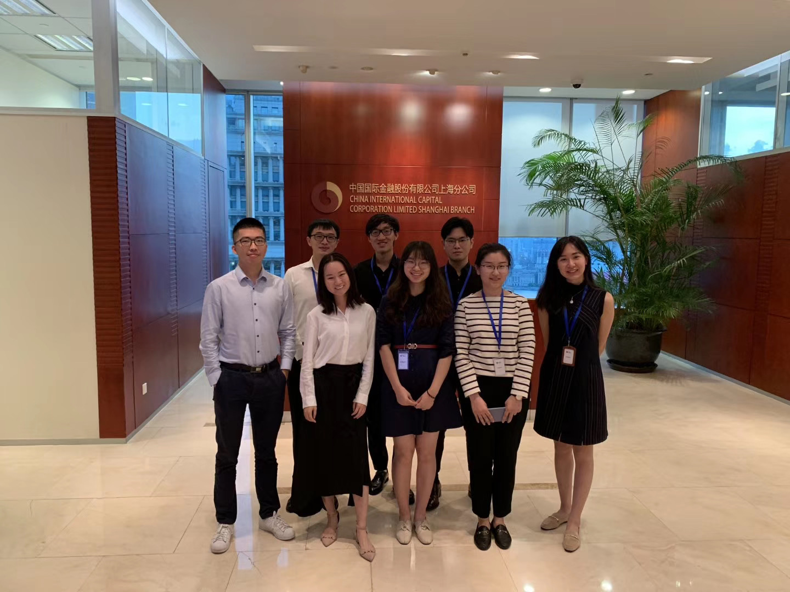

/
• Constructed 10-year DCF model for an instant delivery service company, estimated series of parameters based on industrial analysis and feedbacks from company’s managerial personnel
• Analyzed the valuation of an instant delivery service company in ways of comparable companies, comparable transactions, and drafted 8+ slides and QA book for investor communication
• Explored possible storylines and produced 15+ slides for pitchbooks and CIMs over different companies, covering competitive landscape, trends and investment highlights
• Formulated 200+ pages of due diligence report for the private offering of an A-share listed company, covering market trends and company operating status analysis
• Compiled a catalogue for the due diligence documents, collaborated with auditors and lawyers to produce all the working papers required and sorted out 400+ documents accordingly
/
• Analyzed a hospital rear service provider, evaluated its growth potential and profitability, and formulated 30+ slides for the company analysis part of initial investment memorandum
• Explored the investment highlights of an fuel cell engine manufacturer based on KSF identification, supply chain assessment and profitability analysis and completed 10+ slides of the memo for the investment committee
• Modelled the statement of operations for 3 companies, estimated the key drivers based on conclusions of the due diligence and complied explanatory notes accordingly
• Tracked the operating status and investment ratings of 4+ invested companies and reported to the investment managers respectively
• Prepared one-page teasers and marketing materials for 5+ companies
• Developed preliminary screening reports for 3+ companies on industrial landscape, business scopes, competitive advantages, financial performance and comparable companies analysis
• Arranged 120+ bank confirmations and prepared relevant audit papers accordingly
• Extracted 50+ relevant transaction detail information from the internal accounting system of the client and recorded necessary details such as PPE purchase and tax payments for substantive tests